Como fizemos nosso trabalho:
Como usar nosso código:
Primeiro, mude para a pasta codigosC e digite make no terminal para compilar o programa
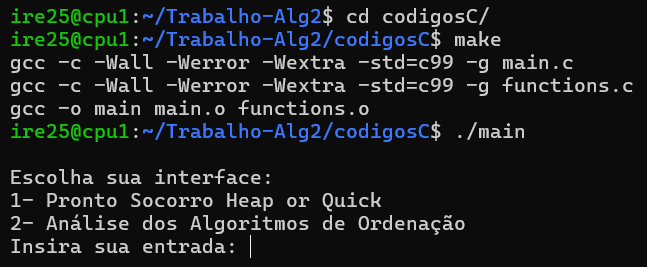Se a opção 1 for a escolhida:
Aparece um menu para a enfermeira escolher o que ela quer fazer
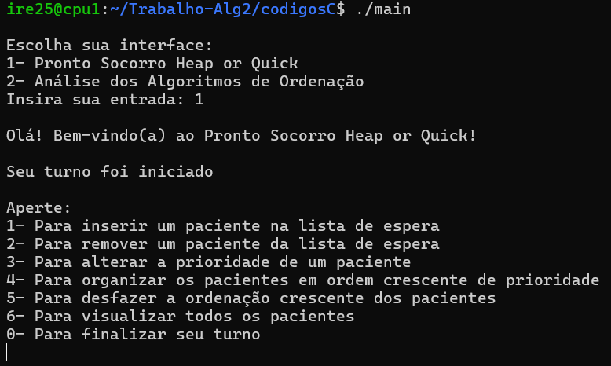Adicionando um paciente na fila de espera ao apertar 1:
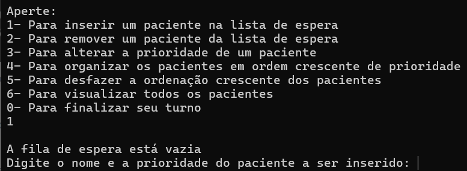 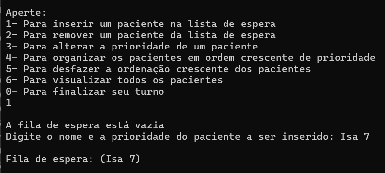Após adicionar vários pacientes, removendo um da fila de espera ao apertar 2:
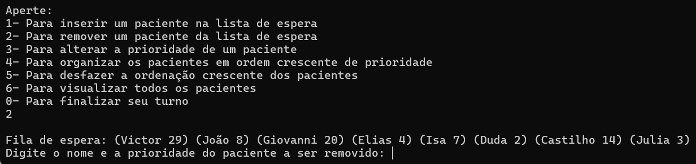 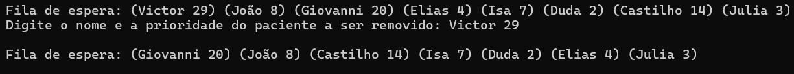Alterando a prioridade de um paciente ao apertar 3:
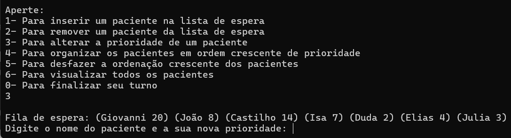 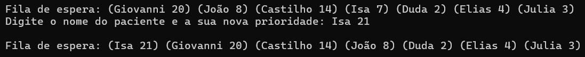Ordenando a fila de espera para ordem crescente ao apertar 4:
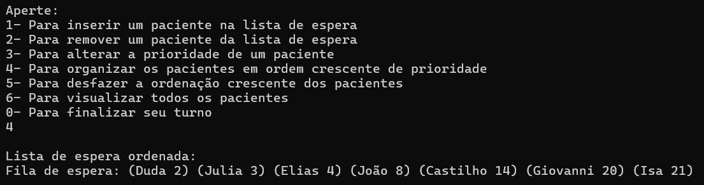Fazendo a fila voltar a ser Heap ao apertar 5:
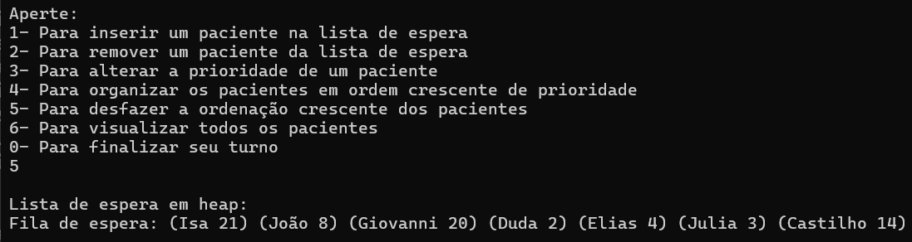Mostrando como está a fila de espera ao apertar 6:
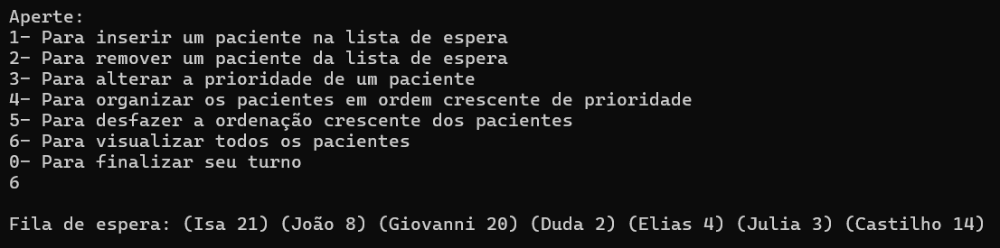Encerrando o turno (o programa) ao apertar 0:
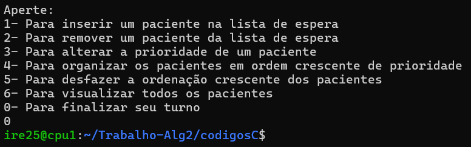Se a opção 2 for a escolhida:
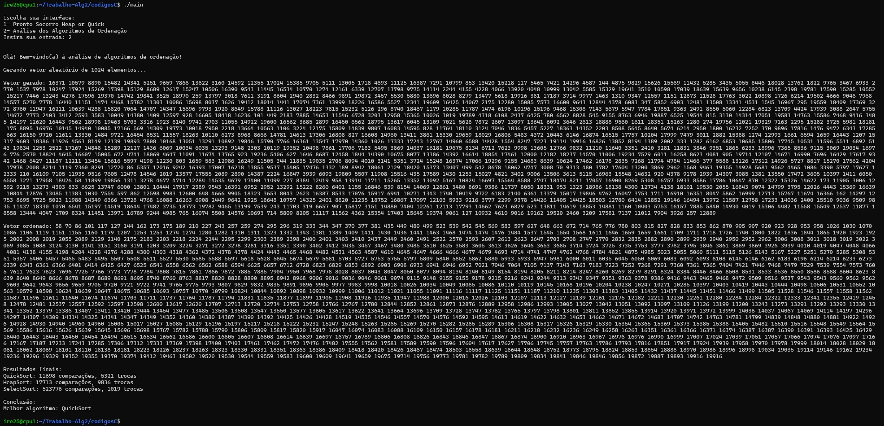Sempre gera um vetor diferente! Mostrando outro exemplo:
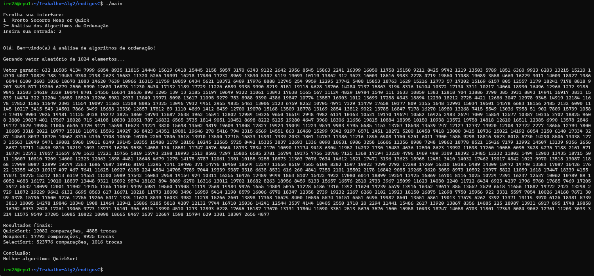26/10/2025
Fizemos uma reunião online, na qual implementamos as funções que usaríamos no heap Fila de espera. As funções que já tínhamos visto em aula, foram totalmente baseadas nas que o professor passou. Já as que nunca tínhamos visto (como a ), implementamos da seguinte maneira:
Observação:
Estávamos usando uma struct paciente diferente apenas para implementar as funções corretamente, a qual era assim:
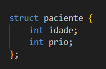Em vez de usarmos um campo nome, estávamos usando um campo idade. Isso aconteceu porque ainda não sabíamos mexer muito bem com o tipo char. Então, apenas para garantir que estava tudo certo com as nossas funções, ficamos usando o tipo int.
29/10/2025
Deixamos nosso programa organizado, ainda não estava tudo pronto, mas queríamos organizar bem nossas funções. Então, tivemos a ideia de fazer uma biblioteca de funções, igual aprendemos na matéria de Programação I. Além disso também criamos o makefile.
A biblioteca de funções com apenas as funções que já havíamos implementado:
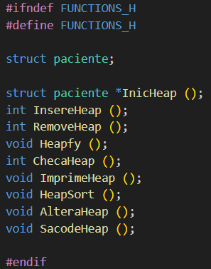O makefile:
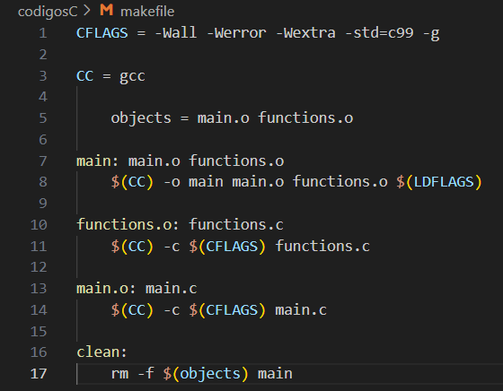A main ainda nem estava feita, mas já deixamos ela no makefile para adiantar o processo. Nesse dia já tínhamos as funções do heap Fila de espera feitas (porém sem usar char ainda) no functions.c, uma biblioteca de funções no functions.h e um makefile.
03/11/2025
Fizemos a main, e criamos nosso Menu de escolhas. O início do menu vem com uma escolha de qual caminho seguir, se é o do Pronto Socorro ou o da Análise de Algoritmos. Porém nesse dia ainda não tínhamos nenhuma função de ordenação pronta ainda. Então apenas criamos na main tudo que envolvia a escolha da opção 1 (Pronto Socorro), enquanto a escolha da opção 2 (Análise de Algoritmos) encerrava o programa.
Aqui tem uma demonstração do menu e o que acontece quando se aperta 1, que era só o que funcionava nesse dia:
Dentro desse segundo menu já estavam funcionando as opções 1, 2, 3, 6 e 0. A 4 não estava funcionando, pois ainda não tínhamos implementado as funções de ordenação e ela precisa do HeapSort. Já a 5 até funcionava, porém não fazia alteração alguma na fila de espera, pois ela usa o Heapfy, o qual não muda nada numa fila que já é um Heap.
04/11/2025
Mudamos o campo idade da struct paciente para nome (char). Fizemos todas as alterações nas funções para elas funcionarem com char. As mais diferentes foram essas:
Essa é para inserir o nome do paciente no vetor, é bem diferente do que estamos acostumadas, então tivemos que pesquisar
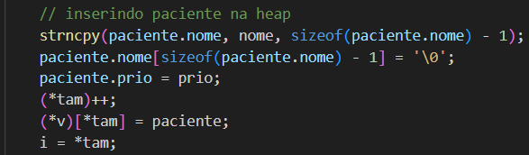Essa é para comparar dois nomes, também tivemos que pesquisar porque antes achávamos que era só usar == como em números, mas não, tem uma função específica para isso que fica na biblioteca string.h, a qual tivemos que importar
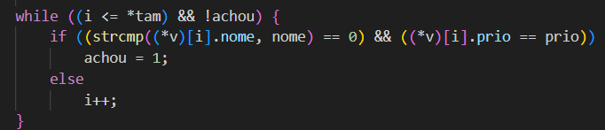Nesse dia também implementamos as funções de ordenação e adicionamos suas chamadas na nossa biblioteca.
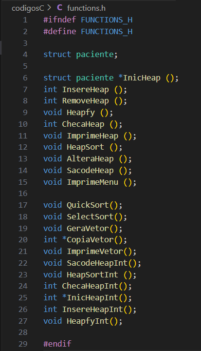Mudamos a main para que ao aparecer o menu inicial e a entrada fosse 2, o programa executasse essa parte de Algoritmos de ordenação. Porém, os vetores gerados ainda eram sempre iguais pois usavam a seed 0. Estávamos usando esse vetor fixo apenas para testes.
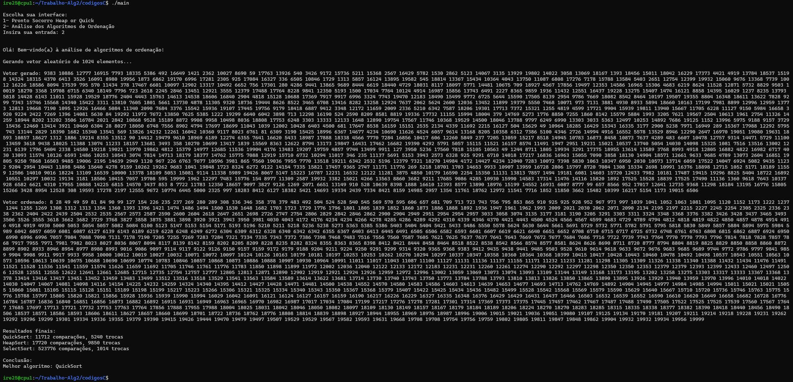05/11/2025
Alteramos a seed para, a cada execução, gerar um vetor diferente. Para isso importamos a biblioteca time.h
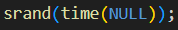06/11/2025
Fizemos os testes finais, ajustamos algumas funções e seus nomes e alteramos alguns comentários.